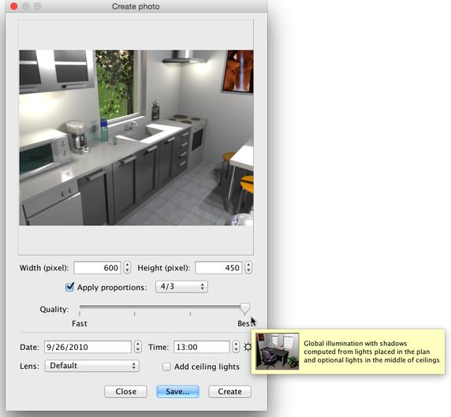

To create 3D images or photos of your home, choose the 3D view
> Create photo... menu item or click on the Create photo
tool.
 Create
photo tool Create
photo tool
This will display the following dialog box showing the size, quality
and possibly other settings used during the image creation process,
along with the Create button that launches the computing of the
image and the Save... button that will let you save the shown
image, once computed.

If the default size of the image doesn't satisfy you, choose a different
width and height. When the Apply proportions check box is selected,
the height of the image is automatically updated at each change of the
width according to the proportions given by the combo box beside the
Apply proportions check box.
The Quality slider lets you choose between the four following
levels, from worst to best quality, or from the fastest to the slowest
rendering engine, depending on your way of thinking
|